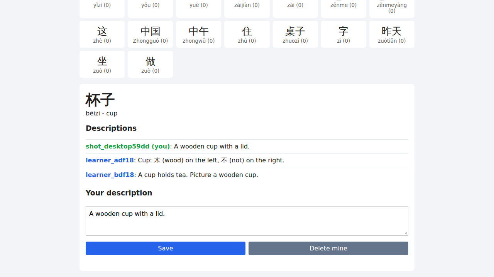
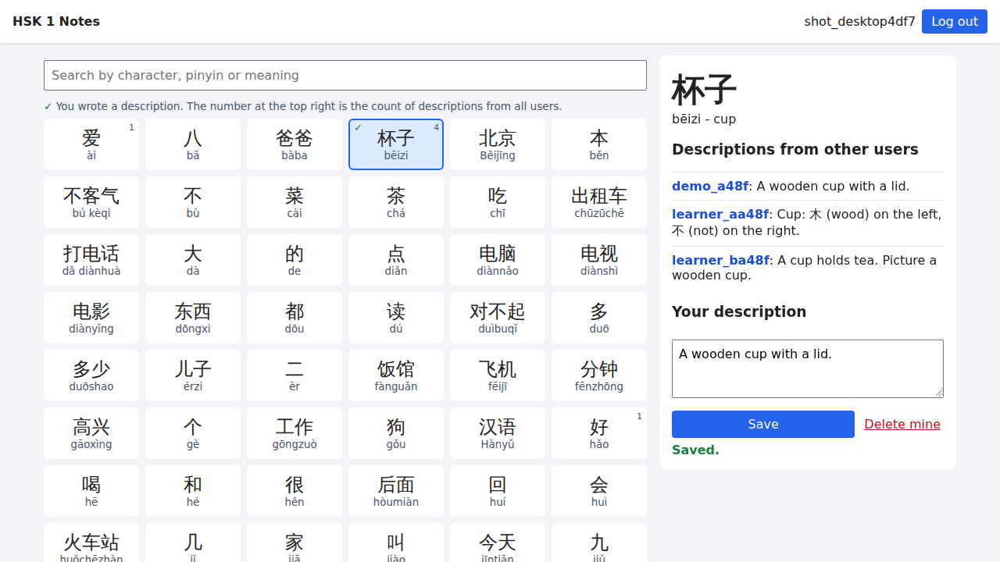
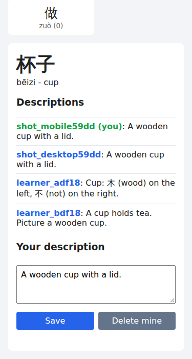
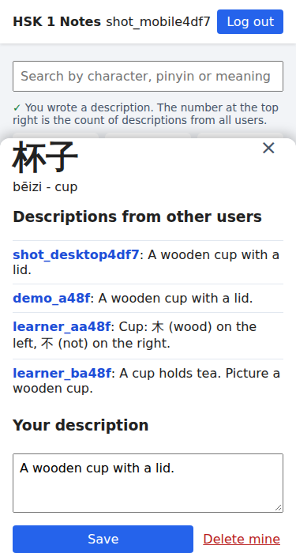
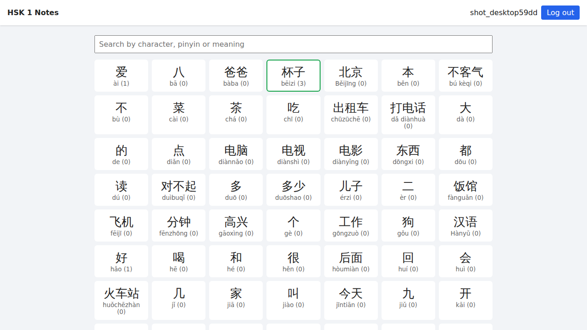
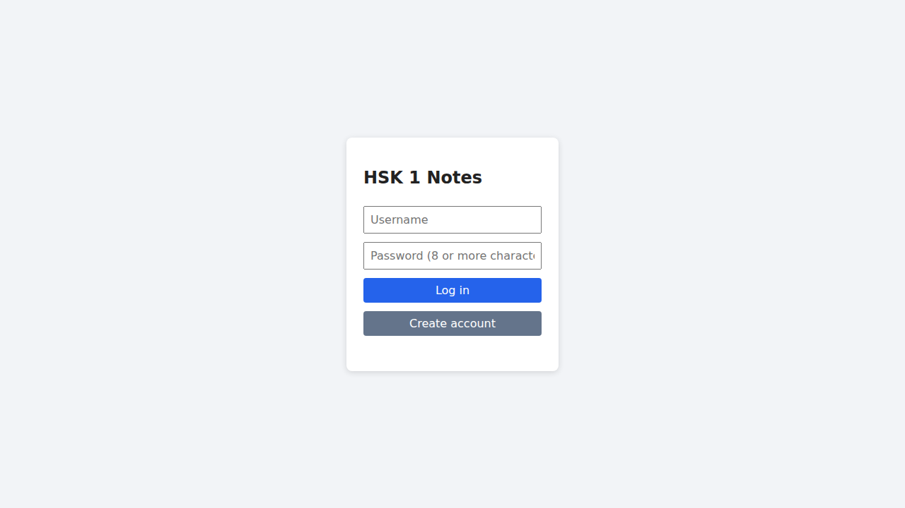
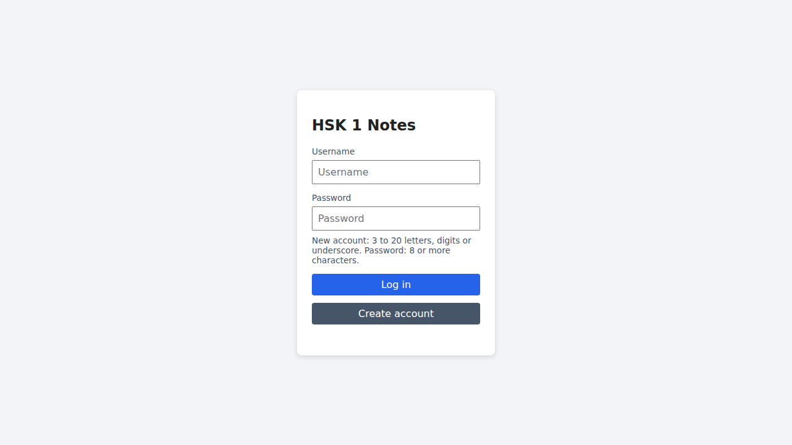

HSK 1 Notes: Design Review
Date: 2026-11-19. Scope: the login page and the main page. Tests ran on a copy of the app with a new database.
Summary
The review found 5 main problems and 6 smaller problems. All of them are fixed in the code. The two videos below show each problem before the fix and the same step after the fix. The red box is a problem. The green box is a fix.
Videos
Main fixes
1. The detail panel opens far from the grid
Problem: The panel was below all 149 tiles. After a click, the page scrolled down and the grid was out of view.
Fix: On a desktop screen, the panel is on the right side and stays in view. On a phone, it is a sheet at the bottom of the screen with a close button. The Escape key also closes it.




2. The open tile has no highlight
Problem: A green border meant "you wrote a description". Nothing showed which tile was open. The page did not explain the green border.
Fix: The open tile has a blue border and a blue background. A green check mark shows your descriptions. A small number shows the count of all descriptions. A line above the grid explains both marks.


3. Save gives no feedback
Problem: After you clicked Save, nothing told you that the save worked.
Fix: The message "Saved." shows in green for 3 seconds. Errors show in red. The page now shows only the descriptions of other users in the list. Your own description is in the field only.
4. Delete is as strong as Save and has no warning
Problem: Delete had the same size as Save. One click removed the description.
Fix: Delete is a small red text button. The first click changes it to a red "Confirm delete?" button. The second click deletes. If you do nothing, the button goes back after 4 seconds.
5. The tiles cannot be used with the keyboard
Problem: Each tile was a div. The Tab key skipped all tiles. A screen reader did not announce them.
Fix: Each tile is now a button with a clear label, for example "杯子, bēizi, cup. 1 descriptions. You wrote one." All buttons and tiles show a blue focus outline.
Smaller fixes
| Area | Problem | Fix |
|---|---|---|
| Tiles | Long pinyin wrapped. Row heights were not equal. | The pinyin stays on one line. The count is a small badge. |
| Login | The password placeholder was cut off. | The placeholder is "Password". The rules are in a hint below the fields. |
| Search | A search with no result left a blank grid. | The page shows "No words found." |
| Contrast | The green "(you)" text was about 3.3:1. | The page uses darker colors (#15803d, #475569). The contrast is above 4.5:1. |
| Labels | The fields had only placeholders. | Each field has a label. The search field has a hidden label for screen readers. |
| Chinese text | No Chinese font and no language tag. | The font list has Noto Sans SC, PingFang SC, and Microsoft YaHei. The Chinese text has lang="zh". |


Not done
- Times on the descriptions.
- Filters such as "My words" and "No descriptions yet".
- Dark mode for the app.
- HTTPS. The site still uses HTTP.